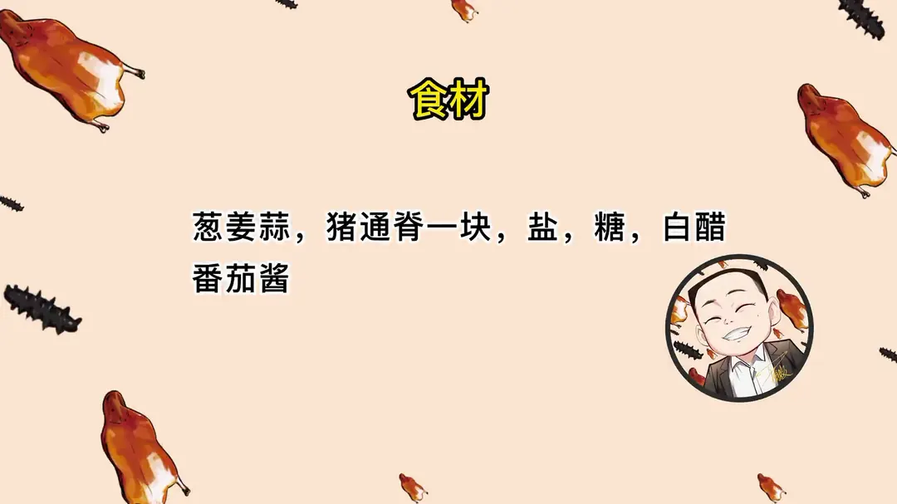
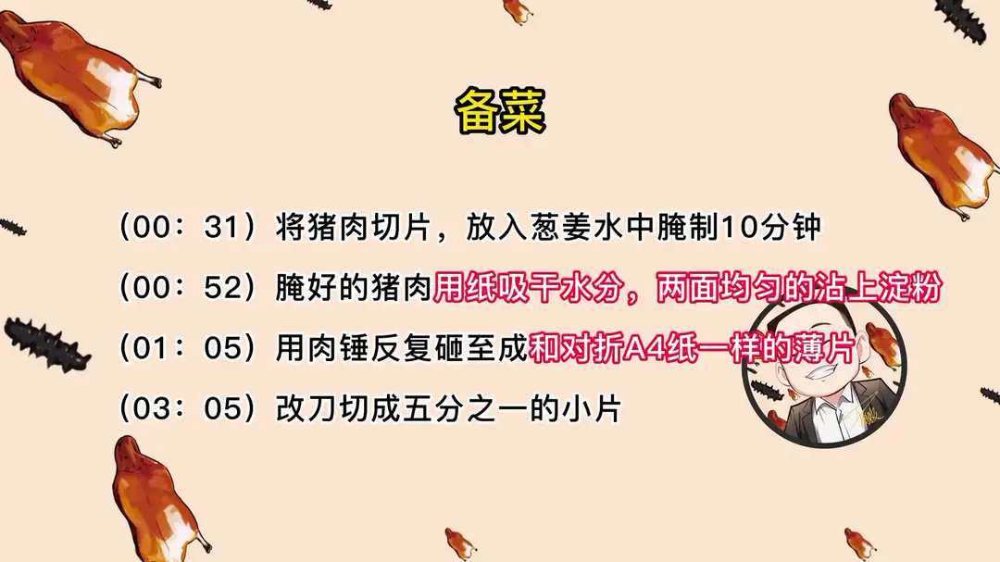
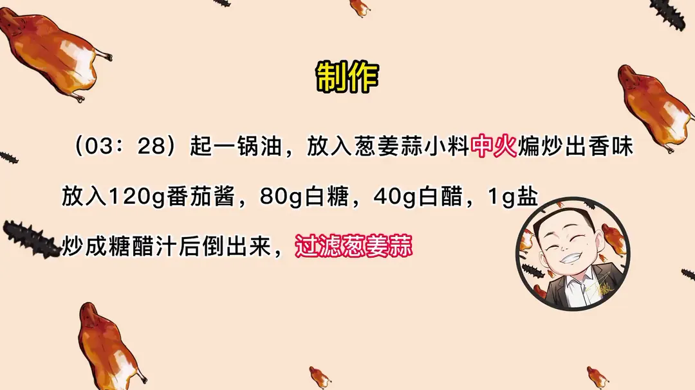
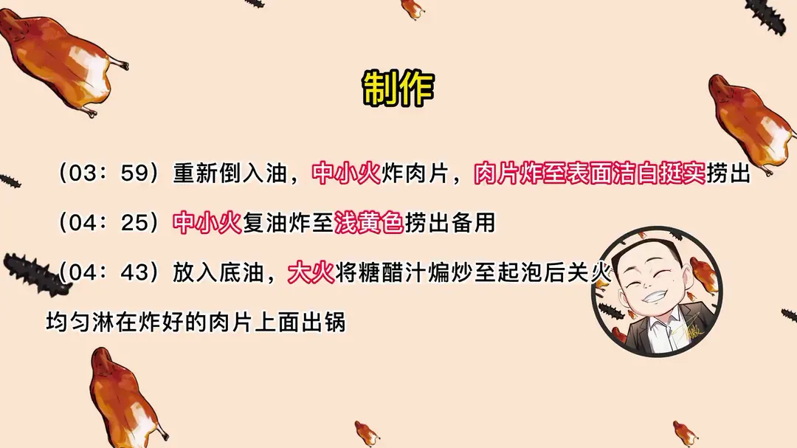

分子锅包肉
隋卞一做。主料猪通脊一块。肉片腌后拍粉，用肉锤砸成对折 A4 纸般的薄片，先中小火炸挺实再复炸，最后浇番茄糖醋汁。
原视频：https://www.bilibili.com/video/BV1CmZiYfEu6
食材
猪通脊、番茄酱、白糖 等 9 样
| 类别 | 用料 | 用量 |
|---|---|---|
| 主料 | 猪通脊 | 1 块 |
| 配料 | 葱 | 适量 |
| 配料 | 姜 | 适量 |
| 配料 | 蒜 | 适量 |
| 调味 | 番茄酱 | 120g |
| 调味 | 白糖 | 80g |
| 调味 | 白醋 | 40g |
| 调味 | 盐 | 1g |
| 挂糊 | 淀粉 | 适量 |
步骤
- 切片腌制：将猪肉切片，放入葱姜水中腌制 10 分钟。
- 拍粉：腌好的猪肉用纸吸干水分，两面均匀地沾上淀粉。
- 捶片改刀：用肉锤反复砸至成和对折 A4 纸一样的薄片，改刀切成五分之一的小片。
- 炒糖醋汁：起一锅油，放入葱姜蒜小料中火煸炒出香味，放入 120g 番茄酱、80g 白糖、40g 白醋、1g 盐，炒成糖醋汁后倒出来，过滤葱姜蒜。
- 炸制：重新倒入油，中小火炸肉片，肉片炸至表面洁白挺实捞出。
- 复炸：中小火复炸至浅黄色捞出备用。
- 裹汁出锅：放入底油，大火将糖醋汁煸炒至起泡后关火，均匀淋在炸好的肉片上面出锅。
讲解要点
难度：★★★★☆（没有高超刀工，但要肯花时间捶肉，炸制窗口极短）
为什么这么做
- 切片后先泡葱姜水 10 分钟：肉便宜也得去腥，葱姜水腌完再吸干，表面干爽才能沾住干淀粉。
- 两面拍匀干淀粉：淀粉是肉和锤子之间的隔离层，不拍肉会粘在墩子上；砸的过程中肉面透了、发湿就补粉。
- 用肉锤慢慢砸到 0.15mm：比馄饨皮还薄，透光能看见纹理；没有肉锤用擀面棍代替，只是费力。
- 改刀切成小片：薄片入口容易，也便于挂汁。
- 糖醋汁炒完滤掉葱姜蒜：「食其味不见其物」，葱姜蒜只留香味不碍口感。
- 四成油温、中小火炸：片子极薄，油温一高就上色发硬；表面发白挺实就捞，浅黄色立刻出锅。
- 炸两遍：第一遍定型和去水分，第二遍让表壳更脆、能撑住浇汁。
- 汁在肉片上浇而不是回锅拌：滚汁起泡离火再淋，每片都裹上汁又不把壳泡软。
容易翻车
- 油温不敢太高，全程中小火，别炸过火，一变浅黄就捞。
- 肉片薄要不停翻看，容易局部炸糊。
原片尾卡




原片文案
AI 字幕校准稿
这猪肉透过光还能看见肉的纹理。灯影牛肉你们都知道，但是灯影猪肉你们吃过吗？这个菜会的人不多，全网的教程更是没有了，你们今天来着了。灯影猪肉需要准备的就是一块猪通脊，然后一些淀粉。先切片，刀先沾点水，切成这个厚度就可以了。
切完放到葱姜水里边，腌它个 10 分钟就行。虽然说我们买的猪肉很干净，多少还得给它去点腥，多少还是有的。腌好的肉放在纸上吸干水分。下面就是这道菜的关键了：淀粉倒上面，两面均匀地沾上干淀粉。
这个叫肉锤，你们家里没有这个的，可以使擀面棍。这就是一个慢慢的过程，慢慢砸。淀粉一定要蘸匀，如果不沾淀粉，你这肉就粘在墩子上面了。你要做这个菜，我估计大家都以为你家在装修。只要你砸的肉面上湿了、透水了，就要沾淀粉。
咱们砸成这样就行了。这是一张 A4 纸，给它对折，跟那个肉放到一起，就是这个厚度，比馄饨皮还要薄，大约在 0.15 毫米。这个是没敲之前的肉片，放到一起比，一倍、两倍，大约五倍。为了方便入口，我们这还要改下刀。
确实是厨师的创意。我记得福建还是浙江有一种肉燕，那个掺粉掺得比较多，加在馅儿里边反复地压，我们这是直接敲的，工艺不一样。然后来点炝个锅：锅里边放点底油，葱姜蒜小料，炒香了之后把番茄酱倒进去，加入白糖、白醋，然后把汁倒出来，里边的葱姜蒜给它过滤出去。
重新倒入干净油，油温大约四成热，油温不敢太高，因为我们这个片特别薄，基本都是中小火炸。炸的时候要不停地看着点，关注着翻一翻，千万别炸过火。看着表面洁白了、挺实了，就先捞出来，一会儿还要再复炸一遍。第二遍一定是中小火炸，火大了一会儿就会很皮，只要变成浅黄色就可以捞了，就这个色就行了。
锅里边放入刚才咱们炸过肉片的热油，把炒好的汁倒进去，开大火，汁起泡，然后关火，淋在肉片上，每个角落都给它浇上。咱们出锅装盘。好酥啊，我觉得这个酥度已经比大部分的薯片都要酥了。入口鲜，没有肉的感觉，是酥脆和里面特别香的那个汁；吃起来特别像是炸的那个面片，但是它有很浓的那个肉香。
有一丝丝的油腻也被葱姜蒜末给压住了。我有点理解你为什么把那个葱姜蒜全部捞出来，是为了不让葱姜蒜影响这个肉的口感。这叫食其味不见其物。然后慢慢地等这个葱姜蒜的味道没有了以后，那个肉香味才慢慢地涌上来。从我吃第一片到现在大概有一分钟了，它还是肉香味，特别足，完全吃不出来是猪肉。
这就是厨师们的聪明之处，得一点点摸索去研究、去制作，反复做，才能有可能制造出一个非常完美漂亮、高颜值低成本的菜品。这会已经过了一个半小时，我再来检查一遍：这个放到明天早上，照样酥脆。